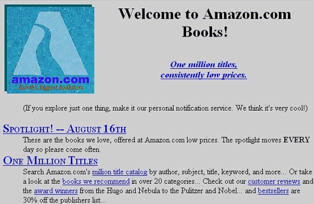
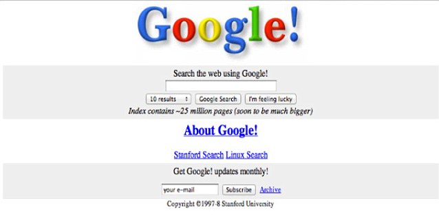
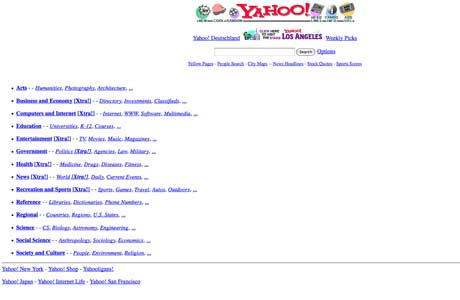
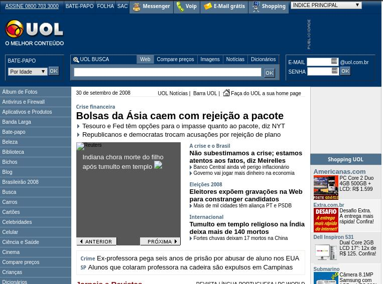
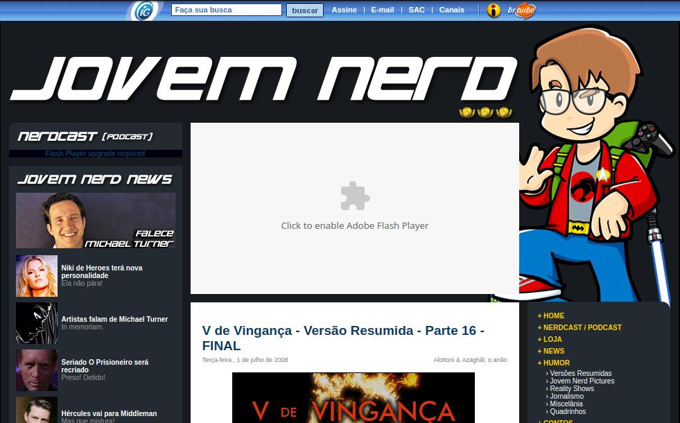
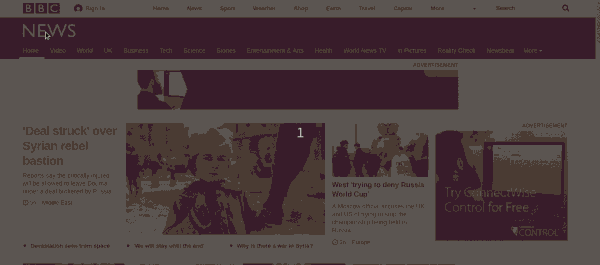
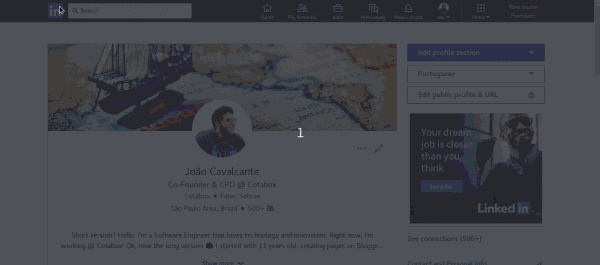
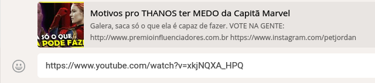

Aplicações front-end modernas
1990 - 2000 (Web 1.0)
Sites simples

Amazon (1994)

Google (1998)

Apple (1994)

Yahoo (1996)
2000 - 2010 (Web 2.0)
Uma melhoria considerável

Uol (2009)

Jovem Nerd (2008)
Primeiras divisões
- Web Designer (responsável por desenhar telas em Photoshop/Fireworks e passar para o HTML/CSS)
- Programador (responsável por pegar o HTML e CSS e passar para linguagens de programação, como PHP, Java, ASP, além de cuidar de banco de dados).
- Sysadmin (responsável por infra)
- Webmaster (Era a pessoa que fazia tudo, desenhava, programava e subia o site).
Precisavamos de PODER!
Novas ferramentas
- JSON (formatação de dados alternativa ao XML).
- jQuery (primeira biblioteca Javascript a se tornar absurdamente popular, com o objetivo de tornar a tela muito mais rica em interação).
- Ajax (metodologia de desenvolvimento assíncrono utilizando Javascript e XML/JSON para tornar telas muito mais interativas).
2010 - hoje (Web 2.5?)
Primeiros frameworks SPA's
Angular.js
(Google - 2009)Backbone.js
(Jeremy Ashkenas - 2010)
Ember.js (2011)
(Yehuda Katz - 2011)Knockout.js
(Steve Sanderson - Microsoft - 2010)Um "único" objetivo
criar aplicações visíveis ao público (front-end) ricas em interação
Time de Desenvolvimento - Designers
- UX Designer: Profissional responsável por fazer estudos, pesquisas e protótipos afim de definir a melhor arquitetura de informação para posicionar elementos em uma tela.
- UI Designer: Após a definição de usabilidade, é ele quem vai fazer esses desenhos e protótipos em algo mais próximo da realidade, utilizando cores, sombreamento e enfim desenhando telas para serem reproduzidas por front-end developers. (É uma evolução do Designer Gráfico).
Time de Desenvolvimento - Front-end
- Front-end: profissional responsável pela parte frontal da aplicação, que é visível ao público ou usuário e tem como principal responsabilidade, tornar essa parte cada vez mais leve, fluída e seguindo padrões de usabilidade. É hoje, um programador como o back-end, pois existe hoje muita manipulação de dado e é preciso conhecimentos como estruturas de dados e técnicas padrões da Computação).
Time de Desenvolvimento
- Back-end: Profissional que tem como responsabilidade desenvolver regras de negócio e a comunicação com banco de dados e outros serviços de back-end.
- Devops: Uma evolução do que é o Sysadmin
- Fullstack: Uma evolução do que era o Webmaster
Single Page Applications
Objetivos?
- Tornar as aplicações mais interativas e dinâmicas
- Dar mais responsabilidade ao profissional, para que ele pudesse cuidar de outros aspectos que antes não possuíam tanta relevância, porém agora, é uma parte fundamental do conjunto de aplicações e sistemas web.
O que é?
Aplicações que através de uma única página (index.html), renderizam todo seu conteúdo através do Javascript, buscando conteúdo em uma API geralmente.

BBC (Portal padrão)

LinkedIn (SPA)
Agora devo sempre usar SPA's?
Claro que não!
Quando utilizar Single Page Applications?
Perguntas que devemos nos fazer!
- Qual o tamanho do meu time?
- Qual o problema que eu quero resolver?
- Quem é meu público?
Use SPA's se:
- Desenvolver dashboards e sistemas internos (protegidos com senha e afins) com uma equipe maior que 1 pessoa.
- Desenvolver aplicações mais ricas e intuitivas, além de mais fluídas.
- Quer separar responsabilidade dos desenvolvedores e focar para alcançar resultados mais avançados
Use SPA's se:
- Quer desenvolver ecommerce, sites onde a indexação (SEO) é importante, porém possui uma equipe experiente. Pois assim é possível ganhar os benefícios das SPA’s, sem perder rankeamento e visibilidade no Google e afins.
Como?
Principais Nomes
- React (Facebook)
- Vue.js
- Angular (Google, evolução do antigo Angularjs)
Quem usa?
- Netflix (React)
- Airbnb (React)
- Twitter Mobile (React)
- Linkedin (Ember)
Parece que é, mas não é!
- Facebook (React)
- Youtube (SPFJS)
- Alibaba (Vue.js)
- Cotabox (Vue.js :p)
Fragmentos?
SEO
Exemplo: Youtube

Exemplo de renderização no servidor
Server-side rendered
Frameworks dos frameworks :P
- Next.js (Feito em cima do React, com o objetivo de criar aplicações server side rendered)
- Nuxt.js (Cópia barata porém incrível em cima do Vue.js xD, que é o que utilizamos na Cotabox)
Resumão
SPA's são baseadas em:
- Restful API’s (ou GraphQL API’s, tema da palestra do Leozão)
- JSON
- Chamadas Ajax
- E principalmente, frameworks e bibliotecas Javascript, como o React, Vue.js e Angular